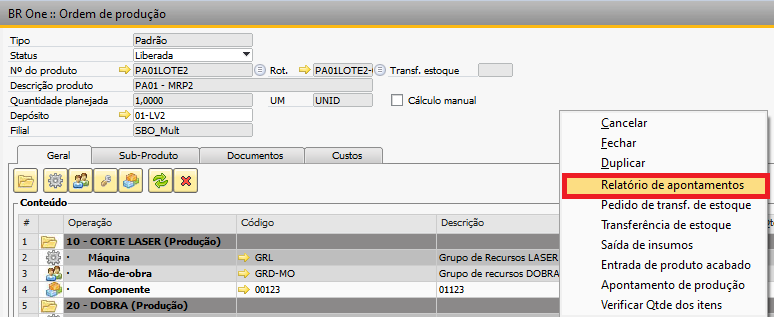
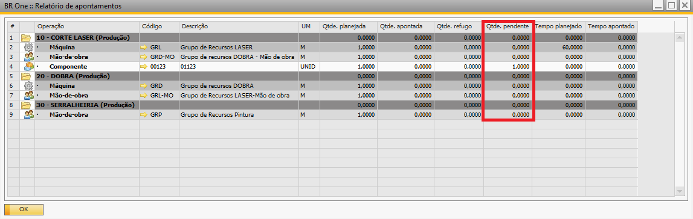
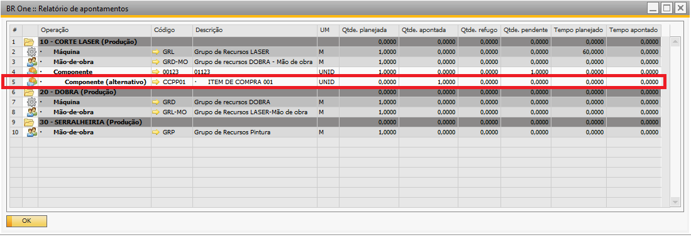
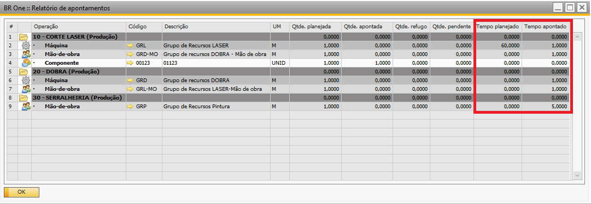

Relatório de Apontamentos
No relatório de apontamentos, você consegue observar e analisar as informações de apontamentos dos componentes e grupo de recursos.
É possível verificar a quantidade pendente de cada linha da ordem de produção.
Para acessá-lo, basta clicar com o botão direito na Ordem de Produção e na opção de “Relatório de apontamentos”.
{kind=link}
Nesse relatorio é baseado na Ordem de Produção, podendo visualizar as informações:
Dos componentes:
Qtde. planejada
A coluna Qtde. planejada é recuperada da aba geral.
Qtde. apontada
A coluna Qtde. apontada é a soma das saída de insumos do componente sem refugo.
Qtde. refugo
A coluna Qtde. apontada é a soma das saída de insumos do componente com refugo.
Qtde. pendente
A coluna Qtde. pendente é realizado o cálculo.
Quantidade pendente = Qtde planejada - Qtde apontada - Qtde refugo
{kind=link}
Se for feito apontamentos com um item alternativo, o componente aparecerá sinalizado com (alternativo) e não será descontado da quantidade pendente, apenas quando houver saída de item da OP.
{kind=link}
Dos grupo de recursos:
Tempo planejado
A coluna Tempo planejado é recuperada da aba geral.
Tempo apontado
A coluna Tempo apontado é a soma dos apontamento de produção realizado para o grupo de recurso.
{kind=link}